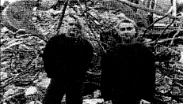

|
 Este grupo alemán de Exter está formado por Stephen H. Frye y Mark D. Chicken. Su estilo se prodría englobar dentro del dark-EBM, música bailable pero sin perder su sonido oscuro. Poco más os puedo decir de este grupo del que no he encontrado ni un solo link el la Red. La verdad es que es una pena, pero es prácticamente imposible comprar ningún disco suyo en Madrid. El estilo (porque eso sí, tengo varias canciones) es muy bailable, y tienen canciones como "I'm the devil" de las que no te cansas nunca. Si alguien tiene una foto ¡qué me la mande! |